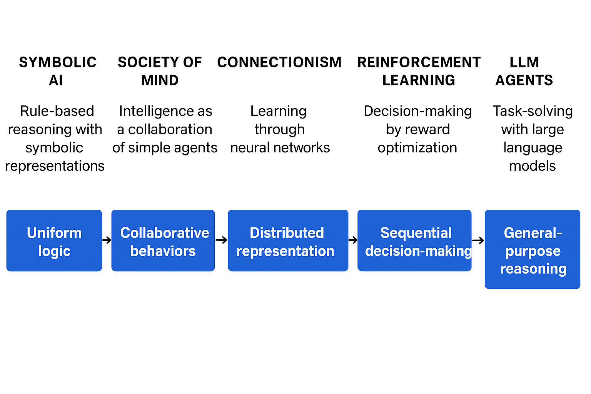

第二章 智能体发展史
🕰️ 历史脉络：从符号主义到现代智能体

图 2.1 AI智能体的演进阶梯
图2.1的演进阶梯解读
符号主义智能体 (1960s-1980s)
↓
痛点：脆弱性、知识瓶颈、缺乏常识
↓
行为主义/反应式智能体 (1980s-1990s)
↓
痛点：缺乏规划能力、短视决策
↓
连接主义/学习型智能体 (1990s-至今)
↓
痛点：数据依赖、可解释性差
↓
现代混合智能体
🔍 符号主义智能体深度分析
1. 物理符号系统假说（PSSH）的革命性意义
理论贡献
- 将智能形式化：首次明确提出“智能=符号处理”的可计算标准
- 提供了可验证标准：为判断一个系统是否具有智能提供了理论依据
- 统一了认知科学和计算机科学：心智活动被视为信息处理过程
局限性揭示
# PSSH隐含的假设链
IF 世界可以完全符号化
AND 符号操作可以模拟所有智能行为
AND 我们能找到正确的符号表示方法
THEN 实现通用人工智能
# 问题：这三个前提都不完全成立

图 2.2 物理符号系统的构成元素
2. 专家系统的双面性
成功原因深度解析
- 领域封闭性：医学、化学等领域有明确规则边界
- 专家知识可编码：诊断流程相对标准化
- 价值明确：辅助决策而非完全替代

图 2.3 专家系统的通用架构
MYCIN的技术创新分层
表层：诊断建议系统
↓
中层：置信因子推理（不确定性处理）
↓
深层：知识工程方法论（知识获取、表示、验证）

图 2.4 MYCIN反向链推理流程示意图
专家系统的演化谱系
第一代：简单规则系统（MYCIN）
↓
第二代：基于案例的推理（CBR）
↓
第三代：混合专家系统（规则+机器学习）
↓
现代：可解释AI（XAI）的前身
3. SHRDLU的里程碑意义
技术集成的突破
自然语言理解 → 世界模型 → 规划器 → 执行器 → 记忆系统
↓
统一的符号表示贯穿始终

图 2.5 SHRDLU的“积木世界”交互界面
SHRDLU在当时
“积木世界”的方法论价值
- 简化复杂性：控制变量，聚焦核心问题
- 完整闭环：感知-推理-行动-反馈全流程
- 可验证性：所有状态可观测，结果可检验
SHRDLU展现的智能层次
Level 1: 语法解析（句法分析）
Level 2: 语义理解（指代消解）
Level 3: 上下文推理（对话连贯）
Level 4: 意图识别（用户目标推断）
Level 5: 动作规划（任务分解与排序）
Level 6: 自我解释（行为动机说明）
⚠️ 符号主义的四大根本挑战
挑战1：知识获取瓶颈（Knowledge Acquisition Bottleneck）
表现形式
"隐性知识"难题：
专家知道如何做 → 但说不清规则
↓
知识工程师试图编码 → 信息丢失/扭曲
↓
系统规则库 → 不完整、有偏差
量化影响
- 成本：专家系统开发中，知识获取占60-80%成本
- 时间：大型系统需要数年知识工程
- 可维护性：规则相互依赖，修改困难
挑战2：常识问题（Common-sense Problem）
常识的维度
常识_categories = {
'物理常识': ['物体会下落', '水往低处流'],
'社会常识': ['敲门后等待回应', '排队时保持距离'],
'心理常识': ['别人痛时会叫喊', '高兴时会微笑'],
'功能常识': ['椅子可以坐', '刀可以切东西'],
'默认推理': ['鸟会飞（除非是企鹅）'],
}
Cyc项目的启示
- 雄心：建立人类所有常识的符号化知识库
- 现实：40年努力，500万条断言，仍远远不够
- 核心困境：常识的开放性和情境依赖性
挑战3：框架问题（Frame Problem）
问题本质
# 动作执行前后的状态变化
初始状态: {手中无积木, 桌上有红色积木, 桌上有蓝色积木}
动作: 拿起红色积木
# 符号主义需要显式声明：
变化: 手中有红色积木, 桌上无红色积木
不变: 桌上有蓝色积木, 世界是三维的, 重力存在...
# 问题：不变集合是无限的！
解决尝试
- 框架公理：为每个动作声明所有不变项 → 组合爆炸
- 异常公理：只声明变化项，其他默认不变 → 仍不完备
- 情景演算：形式化逻辑框架 → 计算复杂度高
挑战4：脆弱性（Brittleness）
脆弱性表现层级
Level 1: 输入偏差（小变化导致完全错误）
↓
Level 2: 规则冲突（新情况无匹配规则）
↓
Level 3: 上下文误解（相同符号不同含义）
↓
Level 4: 目标迷失（无法处理多目标冲突）
现实世界对比
| 维度 | 符号系统 | 人类智能 |
|---|---|---|
| 异常处理 | 崩溃 | 灵活适应 |
| 模糊容忍 | 极低 | 极高 |
| 泛化能力 | 几乎为零 | 强大 |
| 学习能力 | 无（除非重新编码） | 持续学习 |
🔄 从符号主义到现代智能体的范式转换
符号主义的遗产
- 方法论遗产
- 知识表示理论
- 逻辑推理形式化
-
专家系统架构
-
问题意识遗产
- 明确了AI的困难本质
- 提出了可验证的标准
-
揭示了智能的复杂性
-
技术遗产
- 产生式系统 → 现代规则引擎
- 框架问题思考 → 情境理解研究
- 知识工程 → 知识图谱
范式转移的关键节点
1. 从“手工编码”到“自动学习”
符号主义：智能 = 预先编码的知识 + 推理规则
↓ 瓶颈：知识获取困难
连接主义：智能 = 从数据中学习的模式识别能力
2. 从“逻辑完备”到“概率近似”
符号主义：追求逻辑正确性和完备性
↓ 问题：现实世界充满不确定性
现代AI：接受概率性和近似性，追求实用效果
3. 从“符号操作”到“亚符号处理”
符号主义：高层次符号表示和推理
↓ 局限：难以处理感知、运动等低层次智能
现代AI：神经网络直接处理原始数据（像素、声音波形）
🧠 现代视角下的重新评估
符号主义的现代复兴
1. 混合智能系统
# 现代智能体的典型架构
class ModernAgent:
def __init__(self):
self.neural_module = NeuralNetwork() # 处理感知、模式识别
self.symbolic_module = KnowledgeGraph() # 处理推理、规划
self.reinforcement_learner = RLAgent() # 处理决策优化
def process(self, input_data):
# 神经网络提取特征
features = self.neural_module.extract_features(input_data)
# 符号系统进行推理
plan = self.symbolic_module.reason(features)
# 强化学习优化决策
action = self.reinforcement_learner.optimize(plan)
return action
2. 神经符号AI的兴起
- Neuro-symbolic Integration：结合神经网络的感知能力和符号系统的推理能力
- 示例：AlphaGo = 蒙特卡洛树搜索（符号）+ 价值网络（神经）
- 优势：可解释性 + 数据效率 + 泛化能力
历史教训对现代AI的启示
1. 避免新瓶装旧酒
- 大语言模型的“新常识问题”：看似有常识，实则是统计模式
- 框架问题的变体：情境理解仍然薄弱
- 脆弱性依旧存在：对抗样本、分布外泛化
2. 平衡自动化与可解释性
纯符号系统：完全可解释，但构建困难
纯神经网络：高度自动化，但黑箱问题
混合系统：寻求最佳平衡点
3. 重新思考智能的本质
符号主义的根本追问仍然有效：
- 什么是真正的理解？
- 智能是否可以完全形式化？
- 通用智能需要什么条件？
让我基于这段关于ELIZA的介绍，深入分析其设计思想、技术实现，以及它对现代AI的深远影响：
🤖 ELIZA：一个改变AI认知的简单程序
一、ELIZA的核心设计哲学
1. 反智能的智能模拟
魏泽鲍姆的核心洞见：
真正的智能理解 → 难以实现（当时的AI困境）
↓
模拟智能的感知 → 相对容易
↓
人类倾向于将智能投射到交互对象上
2. 非指导性治疗的完美契合
-
罗杰斯疗法特点：
-
不提供建议，不做出诊断
- 主要通过反射和澄清来帮助来访者自我探索
-
常用句式：“你感觉……”、“你能多说一些吗？”
-
与ELIZA的技术匹配：
# 罗杰斯疗法 vs ELIZA规则
人类治疗师："我注意到你提到了工作压力"
ELIZA规则：IF 输入包含"压力" THEN 回应"工作让你感到压力吗？"
人类治疗师："你对这段关系有什么感受？"
ELIZA规则：IF 输入包含"男朋友" THEN 回应"你能多谈谈你的男朋友吗？"
```
### **二、ELIZA的技术架构解析**
#### **1. 三层处理流水线**
原始输入 → 预处理（标准化、分词） → 关键词匹配 → 规则转换 → 输出生成
#### **2. 关键词匹配策略**
```python
# ELIZA的关键词层级
keywords = {
'一级关键词': ['我', '你', '他', '它'], # 最高优先级
'二级关键词': ['母亲', '父亲', '家庭', '工作'], # 主题关键词
'三级关键词': ['难过', '快乐', '生气', '害怕'], # 情绪关键词
'四级关键词': ['因为', '所以', '但是', '如果'], # 逻辑关键词
}
3. 转换规则类型
# 规则示例
transformation_rules = {
# 模式1：反射（将陈述转为提问）
"我 [X]": ["你为什么[X]？", "你[X]多久了？", "[X]对你意味着什么？"],
# 模式2：联想（关键词触发联想）
"母亲": ["多谈谈你的家庭", "你母亲是什么样的人？", "家庭关系对你重要吗？"],
# 模式3：记忆（引用之前提到的内容）
"昨天我[X]": ["昨天[X]时你感觉如何？", "为什么是昨天[X]？"],
# 模式4：通用填充（无关键词匹配时）
"default": ["我明白了", "请继续", "这很有趣", "你能详细说说吗？"]
}
三、ELIZA的心理学机制
1. 投射效应（Projection）
用户：我有一个问题
ELIZA：你有一个问题？
用户：（内心）它理解我！
实际：只是简单的句式转换
2. 确认偏误（Confirmation Bias）
- 用户倾向于寻找支持自己信念的证据
- ELIZA的开放式提问允许用户自由解读
- 用户将自己的理解填充到模糊回应中
3. 拟人化倾向（Anthropomorphism）
- 技术基础：简单的关键词匹配
- 心理过程：用户将复杂心智状态赋予简单系统
- 结果：产生情感连接和信任感
四、现代视角下的ELIZA
1. ELIZA与ChatGPT的对比
| 维度 | ELIZA (1966) | ChatGPT (2022+) |
|---|---|---|
| 技术基础 | 规则匹配 | 大规模语言模型 |
| 理解深度 | 零理解 | 统计模式理解 |
| 回应生成 | 模板填充 | 概率生成 |
| 可解释性 | 完全透明 | 黑箱模型 |
| 适应性 | 固定规则 | 上下文学习 |
| 伦理担忧 | 情感欺骗 | 信息操纵、偏见放大 |
2. ELIZA的现代变体
# 现代规则聊天机器人的进化
class ModernEliza:
def __init__(self):
self.keyword_matcher = KeywordMatcher() # ELIZA传统
self.intent_classifier = IntentClassifier() # 现代NLP
self.response_generator = ResponseGenerator() # 模板+生成混合
def respond(self, user_input):
# 混合策略
if self.has_clear_pattern(user_input):
return self.eliza_style_response(user_input) # 规则优先
else:
return self.llm_generated_response(user_input) # 生成模型兜底
五、编程实践：实现简化版ELIZA
1. 核心代码框架
import re
from typing import List, Dict, Optional
class SimpleEliza:
def __init__(self):
# 关键词和对应转换规则
self.patterns = {
r'我(?:觉得|感觉|认为)? (.*)': [
"你为什么{}？",
"{}对你来说重要吗？",
"能多谈谈{}吗？"
],
r'我的(母亲|父亲|家人|朋友)': [
"你的{}怎么样？",
"你和{}的关系如何？",
"{}在你生活中扮演什么角色？"
],
r'因为(.*)': [
"这是唯一的原因吗？",
"{}如何影响了你？"
],
r'我总是(.*)': [
"你能举个例子说明什么时候{}吗？",
"{}让你感觉如何？"
]
}
# 默认回应（无匹配时）
self.default_responses = [
"请继续。",
"我明白了。",
"这很有趣，请多说一些。",
"你能详细说说吗？"
]
def match_pattern(self, user_input: str) -> Optional[str]:
"""匹配用户输入的模式"""
for pattern, responses in self.patterns.items():
match = re.match(pattern, user_input)
if match:
# 提取匹配的内容
captured = match.group(1) if match.groups() else ""
response_template = responses[0] # 简单起见，用第一个模板
return response_template.format(captured)
return None
def respond(self, user_input: str) -> str:
"""生成回应"""
response = self.match_pattern(user_input)
if response:
return response
else:
# 随机选择一个默认回应
import random
return random.choice(self.default_responses)
2. 对话示例
eliza = SimpleEliza()
# 测试对话
test_inputs = [
"我觉得生活很累",
"我的父亲对我要求很严格",
"因为我害怕失败",
"我总是拖延"
]
for input_text in test_inputs:
print(f"用户: {input_text}")
print(f"ELIZA: {eliza.respond(input_text)}")
print("-" * 30)
# 输出示例：
# 用户: 我觉得生活很累
# ELIZA: 你为什么生活很累？
# ------------------------------
# 用户: 我的父亲对我要求很严格
# ELIZA: 你的父亲怎么样？
# ------------------------------
六、ELIZA的历史意义与当代启示
1. 技术意义
- 自然语言处理的起点：首次展示机器可以进行看似智能的对话
- 模式匹配的威力：简单技术可以产生复杂效果
- 人机交互的奠基：开创了聊天机器人这一重要领域
2. 哲学意义
# ELIZA引发的根本问题
questions = [
"什么是真正的理解？", # 图灵测试的再思考
"智能是否可以与意识分离？", # 功能主义 vs 现象学
"人类为何如此容易被欺骗？", # 认知心理学问题
"伦理边界在哪里？" # 技术伦理的先声
]
3. 魏泽鲍姆的警告（现代依然适用）
- 工具理性的危险：技术可能被误用为心理替代品
- 责任的转移：用机器解决人类问题可能逃避真正的责任
- 异化的风险：人机关系可能替代人人关系
七、从ELIZA到现代聊天机器人的演进路径
ELIZA (1966)
↓ 局限：完全规则驱动，无学习能力
ALICE (1995) - AIML语言，更复杂的规则
↓ 局限：仍然依赖人工编写规则
统计聊天机器人 (2000s) - 基于信息检索
↓ 局限：对话连贯性差
神经对话模型 (2010s) - Seq2Seq, Transformer
↓ 局限：缺乏常识，容易产生无意义回复
大语言模型聊天机器人 (2020s) - ChatGPT等
↓ 当前挑战：幻觉问题、安全性、可解释性
八、教学实验建议
1. 扩展实验
# 实验1：添加记忆功能
class ElizaWithMemory(SimpleEliza):
def __init__(self):
super().__init__()
self.conversation_history = []
def respond(self, user_input: str) -> str:
self.conversation_history.append(("用户", user_input))
# 尝试使用历史信息
if "你刚才说" in user_input:
# 引用之前的对话
if len(self.conversation_history) >= 2:
prev_user_input = self.conversation_history[-2][1]
return f"你指的是'{prev_user_input}'这件事吗？"
response = super().respond(user_input)
self.conversation_history.append(("ELIZA", response))
return response
# 实验2：添加情感分析
class EmotionalEliza(SimpleEliza):
emotion_keywords = {
"开心": "positive",
"难过": "negative",
"生气": "negative",
"害怕": "negative",
"兴奋": "positive"
}
def analyze_emotion(self, text: str) -> str:
for keyword, emotion in self.emotion_keywords.items():
if keyword in text:
return emotion
return "neutral"
def respond(self, user_input: str) -> str:
emotion = self.analyze_emotion(user_input)
if emotion == "negative":
return "听起来你现在有些困扰，想多谈谈这个吗？"
elif emotion == "positive":
return "很高兴听到你这么说！"
else:
return super().respond(user_input)
2. 反思问题
- 技术层面：ELIZA的方法在哪些场景下仍然有效？
- 伦理层面：当用户对聊天机器人产生情感依赖时，开发者有什么责任？
- 认知层面：我们如何区分"看似智能"和"真正智能"？
- 设计层面：现代聊天机器人应该透明还是隐藏其局限性？
2.2.2 模式匹配与文本替换
ELIZA的算法流程基于模式匹配（Pattern Matching）与文本替换（Text Substitution），可被清晰地分解为以下四个步骤：
- 关键词识别与排序：规则库为每个关键词（如
mother,dreamed,depressed）设定一个优先级。当输入包含多个关键词时，程序会选择优先级最高的关键词所对应的规则进行处理。 - 分解规则：找到关键词后，程序使用带通配符（
*）的分解规则来捕获句子的其余部分。 - 规则示例：
* my * - 用户输入：
"My mother is afraid of me" - 捕获结果：
["", "mother is afraid of me"] - 重组规则：程序从与分解规则关联的一组重组规则中，选择一条来生成回应（通常随机选择以增加多样性），并可选择性地使用上一步捕获的内容。
- 规则示例：
"Tell me more about your family." - 生成输出：
"Tell me more about your family." - 代词转换：在重组前，程序会进行简单的代词转换（如
I→you,my→your），以维持对话的连贯性。
整个工作流程可以用一个简单的伪代码思路来表示：
FUNCTION generate_response(user_input):
// 1. 将用户输入拆分成单词
words = SPLIT(user_input)
// 2. 寻找优先级最高的关键词规则
best_rule = FIND_BEST_RULE(words)
IF best_rule is NULL:
RETURN a_generic_response() // 例如:"Please go on."
// 3. 使用规则分解用户输入
decomposed_parts = DECOMPOSE(user_input, best_rule.decomposition_pattern)
IF decomposition_failed:
RETURN a_generic_response()
// 4. 对分解出的部分进行代词转换
transformed_parts = TRANSFORM_PRONOUNS(decomposed_parts)
// 5. 使用重组规则生成回应
response = REASSEMBLE(transformed_parts, best_rule.reassembly_patterns)
RETURN response
2.2.3 核心逻辑的实现
现在，我们将上一节描述的技术原理转化为一个简单的、可运行的Python函数。下面的代码实现了一个迷你版的ELIZA，它包含了一小部分规则，但足以展示其核心工作机制。
import re
import random
# 定义规则库:模式(正则表达式) -> 响应模板列表
rules = {
r'I need (.*)': [
"Why do you need {0}?",
"Would it really help you to get {0}?",
"Are you sure you need {0}?"
],
r'Why don\'t you (.*)\?': [
"Do you really think I don't {0}?",
"Perhaps eventually I will {0}.",
"Do you really want me to {0}?"
],
r'Why can\'t I (.*)\?': [
"Do you think you should be able to {0}?",
"If you could {0}, what would you do?",
"I don't know -- why can't you {0}?"
],
r'I am (.*)': [
"Did you come to me because you are {0}?",
"How long have you been {0}?",
"How do you feel about being {0}?"
],
r'.* mother .*': [
"Tell me more about your mother.",
"What was your relationship with your mother like?",
"How do you feel about your mother?"
],
r'.* father .*': [
"Tell me more about your father.",
"How did your father make you feel?",
"What has your father taught you?"
],
r'.*': [
"Please tell me more.",
"Let's change focus a bit... Tell me about your family.",
"Can you elaborate on that?"
]
}
# 定义代词转换规则
pronoun_swap = {
"i": "you", "you": "i", "me": "you", "my": "your",
"am": "are", "are": "am", "was": "were", "i'd": "you would",
"i've": "you have", "i'll": "you will", "yours": "mine",
"mine": "yours"
}
def swap_pronouns(phrase):
"""
对输入短语中的代词进行第一/第二人称转换
"""
words = phrase.lower().split()
swapped_words = [pronoun_swap.get(word, word) for word in words]
return " ".join(swapped_words)
def respond(user_input):
"""
根据规则库生成响应
"""
for pattern, responses in rules.items():
match = re.search(pattern, user_input, re.IGNORECASE)
if match:
# 捕获匹配到的部分
captured_group = match.group(1) if match.groups() else ''
# 进行代词转换
swapped_group = swap_pronouns(captured_group)
# 从模板中随机选择一个并格式化
response = random.choice(responses).format(swapped_group)
return response
# 如果没有匹配任何特定规则，使用最后的通配符规则
return random.choice(rules[r'.*'])
# 主聊天循环
if __name__ == '__main__':
print("Therapist: Hello! How can I help you today?")
while True:
user_input = input("You: ")
if user_input.lower() in ["quit", "exit", "bye"]:
print("Therapist: Goodbye. It was nice talking to you.")
break
response = respond(user_input)
print(f"Therapist: {response}")
>>>
Therapist: Hello! How can I help you today?
You: I am feeling sad today.
Therapist: How long have you been feeling sad today?
You: I need some help with my project.
Therapist: Are you sure you need some help with your project?
You: My mother is not happy with my work.
Therapist: Tell me more about your mother.
You: quit
Therapist: Goodbye. It was nice talking to you.
通过上述的编程实践，我们可以直观地总结出规则驱动系统的根本局限性，这些局限正是对 2.1.4 节中符号主义理论挑战的直接印证：
- 缺乏语义理解：系统不理解词义。例如，面对“I am not happy”的输入，它仍会机械地匹配
I am (.*)规则并生成语义不通的回应，因为它无法理解否定词“not”的作用。 - 无上下文记忆：系统是无状态的（Stateless），每次回应仅基于当前单句输入，无法进行连贯的多轮对话。
- 规则的扩展性问题：尝试增加更多规则会导致规则库的规模爆炸式增长，规则间的冲突与优先级管理将变得极其复杂，最终导致系统难以维护。
然而，尽管存在这些显而易见的缺陷，ELIZA在当时却产生了著名的“ELIZA效应”，许多用户相信它能理解自己。这种智能的幻觉主要源于其巧妙的对话策略（如扮演被动的提问者、使用开放式模板）以及人类天生的情感投射心理。
ELIZA的实践清晰地揭示了符号主义方法的核心矛盾：系统看似智能的表现，完全依赖于设计者预先编码的规则。然而，面对真实世界语言的无限可能性，这种穷举式的方法注定不可扩展。系统没有真正的理解，只是在执行符号操作，这正是其脆弱性的根源。
下面是一篇公司内部分享用的总结稿，以“AI专业讲师”的语气撰写，可直接用于口头分享或放入 PPT 作为章节总结。
第二章总结：从心智社会到现代智能体的演进
一、符号主义的瓶颈：单一推理核心的极限
早期的人工智能研究（如专家系统、SHRDLU、ELIZA）都基于一个思路：
用统一的规则和逻辑推理来构建智能。
这带来了两个根本性问题：
- 知识需要手工编码，难以覆盖真实世界的复杂性。
- 单一中央推理核心太脆弱，无法处理模糊性、歧义性和开放世界问题。
这直接导致了符号主义在80年代的停滞，并促成新的思考方向。

图 2.7 符号主义与联结主义范式对比
二、心智社会：智能不是一个整体，而是“协作的产物”
明斯基在《心智社会》中提出的核心观点是：
智能不是来自一个统一的“大脑”，而是源于无数简单智能体之间的协作。
他将人类心智拆解为：
- 大量简单、各司其职的“低层智能体”（如识别线条、抓握物体）
- 由这些简单智能体组成的“机构（Agency）”
- 最终通过局部交互产生“涌现式行为”
举例：搭积木塔
没有一个智能体知道整个任务，但所有部分通过激活、抑制、协作，最终形成复杂行为。
这对计算机科学产生重大启发：
- 智能可以是去中心化的
- 复杂行为可以从简单规则中涌现
- 智能体之间的互动本身也是智能的一部分

图 2.8 强化学习的核心交互循环
它直接影响了后来的：
- 分布式AI
- 群体智能
- 多智能体系统（MAS）
三、联结主义崛起：智能可以“学习”而不是“设计”
传统符号主义无法解决知识获取问题，于是联结主义提出了新的路径：
智能来源于大量简单神经元之间连接权重的学习。
三大核心理念：
- 知识是分布式存储的
- 神经元本身非常简单
- 智能来自学习，而不是规则库
深度学习的成功（图像识别、语音识别、NLP）正是这一路线的爆发。
四、强化学习：智能体拥有了“决策与规划”的能力
联结主义解决了“感知”，但没有解决“行为决策”。
强化学习补上了这个空缺。
其思想非常简单：
智能体通过与环境试错，不断优化策略以最大化长期奖励。
核心要素：
- 状态
- 行动
- 奖励
- 环境
- 策略（Policy）
经典例子：AlphaGo 通过自我对弈学习最优策略。
强化学习让智能体具备：
- 规划
- 取舍
- 面向未来的决策能力
五、大规模预训练：让智能体在“学习任务之前”先理解世界
预训练–微调范式解决了常识与知识的瓶颈。

图 2.9 “预训练-微调”范式示意图
通过海量文本训练的大语言模型（LLM）具备：
- 世界知识
- 语言能力
- 隐式逻辑
- 上下文推理
更重要的是出现了意料之外的“涌现能力”：
- 零样本 / 少样本学习
- 思维链推理
- 工具调用
- 规划能力
LLM 已经不再是传统 NLP 模型，而是一个“通用知识+推理引擎”。
六、现代 LLM 智能体：多技术融合的产物

图 2.10 LLM驱动的智能体核心组件架构
现代智能体（如 AutoGPT、ChatGPT Agents）已经形成了一个标准架构：
- 感知模块：理解环境和输入
- 规划模块：分解任务、推理、反思
- 记忆模块：保留长期经验
- 执行模块：调用工具与 API
- 循环迭代：Observation → Thought → Action → Observation
这个闭环让智能体能够：
- 自主完成复杂任务
- 规划步骤
- 调用工具
- 根据结果自我修正
这是人类智能行为的一种“工程化复刻”。
七、纵观历史：智能体的演进是三大思想的融合
从 1950 年代到今天，智能体的发展可以看作：
| 思潮 | 贡献 |
|---|---|
| 符号主义 | 逻辑推理、结构化知识表示 |
| 联结主义 | 感知、模式识别、神经网络学习能力 |
| 行为主义（强化学习） | 决策、规划、试错优化 |
| 大语言模型（现代融合） | 世界知识、通用推理、工具调用、自主任务执行 |
现代智能体正是这三大方向融合的最终成果。

图 2.12 AI Agent 技术栈概览
一句话总结
从“规则”到“学习”，从“单体智能”到“协作智能”，从“任务模型”到“通用模型”，智能体正从工程系统演化为具备自主性、连续性与社会性的全新数字生命形态。
